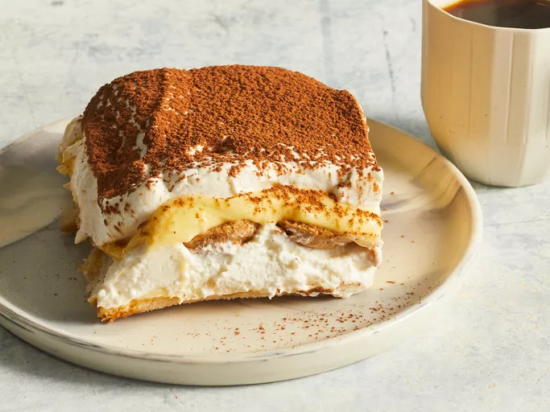
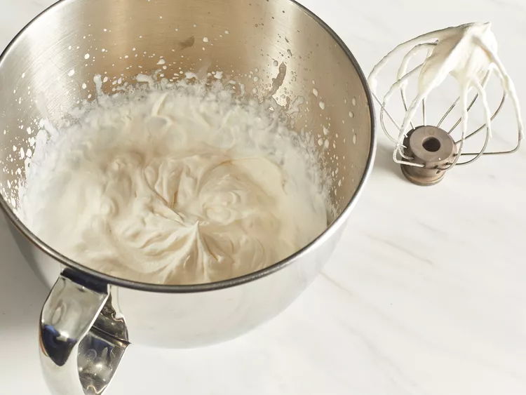
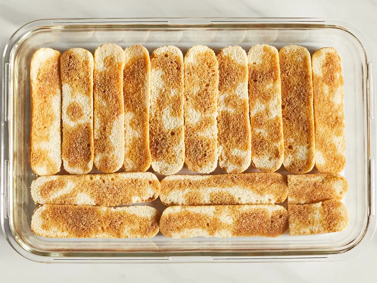
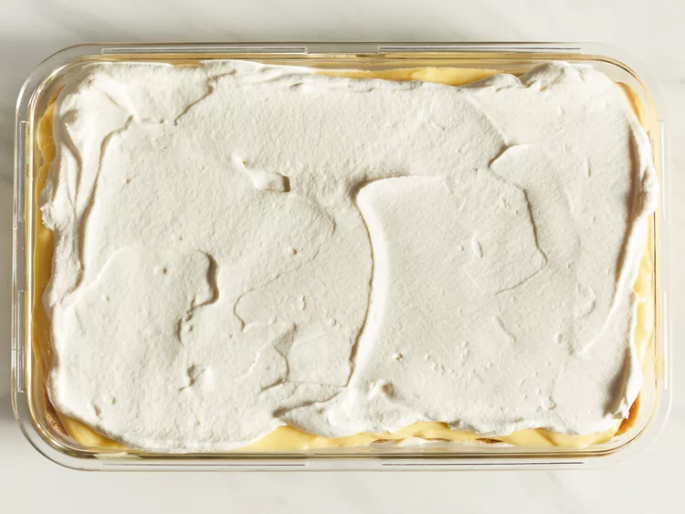

Tiramisu

Description
Tiramisu is a classic Italian layered dessert that's easy to make at home with coffee-soaked ladyfingers, a creamy mascarpone custard, and whipped cream. Dust the top of the tiramisu with cocoa powder for an impressive no-bake dessert!
Ingredients:
- 6 egg yolks
- ¾ cup white sugar
- ⅔ cup milk
- 1 ¼ cups heavy cream
- 1 pound mascarpone cheese
- ¼ cup strong brewed coffee
- 2 tablespoons rum
- 2 (3 ounce) packages ladyfinger cookies
- 1 tablespoon unsweetened cocoa powder
Steps:
- Whisk egg yolks and sugar togheter in a medium saucepan until well blended.
- Whisk in milk and cook over a medium heat, stirring constantly, until mixture comes to a boil.

- boil gently for 1 minute, then remove from the heat and allow to cool slightly.
- Cover tightly and chill in the refrigirator for 1 hour.
- Beat cream and vanilla in a medium bowl with an electric mixer until stiff peaks form.

- Remove egg yolk mixture from the refrigerator; add mascarpone cheese and whisk until smooth.
- Combine coffee and rum in a small bowl. Split ladyfingers in half lengthwise and drizzle with the coffee mixture. Arrange 1/2 of the soaked ladyfingers in the bottom of a 7x11-inch dish.

- Spread 1/2 of the mascarpone mixture over the ladyfingers, then spread 1/2 of the whipped cream over top. Repeat layers once more.

- Sprinkle cocoa powder over top.
- Cover and refrigerate until set, 4 to 6 hours.

- Enjoy!